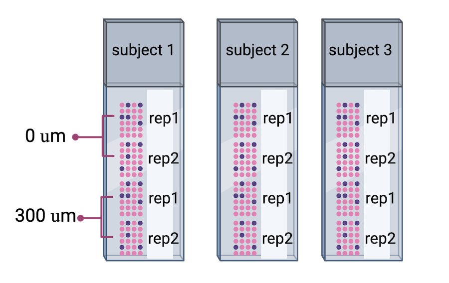

Content from Spatially Resolved Transcriptomics in Life Sciences Research
Last updated on 2024-06-13 | Edit this page
Overview
Questions
- What is spatial transcriptomics?
- What research questions or problems can spatial transcriptomics address?
- How do the technologies work?
- Which technology will we learn about in this lesson?
Objectives
- Describe why and how spatial transcriptomics can be used in research.
- Describe how spatial transcriptomics technology works.
- Describe how spatial transcriptomics addresses the limitations of single-cell or bulk RNA sequencing technologies.
Spatial transcriptomics in biomedical research
Investigating the organization of cells and tissues is fundamental to life sciences research. Cells and tissues situated in different regions of an organ can possess diverse functions and cell types. These cells in turn are influenced by varying tissue microenvironments, receiving and processing distinct information from that microenvironment. Co-located cells can communicate directly with one another through chemical and mechanical signals, responding to these signals with changes in their own state. Thus, knowing the spatial organization of cells in a tissue can reveal cell and tissue function.

Department of Histology, Jagiellonian University Medical College CC BY-SA 3.0 DEED
Spatially resolved transcriptomics describes spatial organization and cell signals, specifically gene expression signals. Spatial patterns of gene expression determine how genes are regulated within a tissue system and how those tissues and their component cells function. Spatial transcriptomic (ST) methods map cell position in a tissue, clarifying the physical relationships between cells and cellular structures. ST simultaneously measures gene expression, delivering valuable information about cell phenotype, state, and cell and tissue organization and function. The combination of cellular expression and position sheds light on signals a cell sends or receives through cell-to-cell interactions. Spatial information localizes cell signaling while delivering comprehensive gene expression profiling within tissues.

Fred the Oyster Public domain, via Wikimedia Commons CC BY-SA 4.0 DEED
Spatial transcriptomics addresses a key obstacle in single-cell and bulk RNA sequencing studies: their loss of spatial information. Spatial organization and structure determine function in most tissues and organs, so capturing both spatial and expression information is critical for understanding tissue function in neuroscience, immuno-oncology, developmental biology, and most other fields.
Spatial transcriptomics technologies
Spatial transcriptomics technologies broadly fall within two groups: imaging-based and sequencing-based methods. Both imaging- and sequence-based datasets are available through the The BRAIN Initiative - Cell Census Network. Sequencing-based datasets are featured in the Human Cell Atlas. These technologies vary in ability to profile entire transcriptomes, deliver single-cell resolution, and detect genes efficiently.
Imaging-based technologies
Imaging-based technologies read transcriptomes in place using microscopy at single-cell or even single-molecule resolution. They identify messenger RNA (mRNA) species fluorescence in situ hybridization (FISH), i.e., by hybridizing mRNA to gene-specific fluorescent probes.

Adapted from Spatial Transcriptomics Overview by SlifertheRyeDragon. Image created with Biorender.com. Public domain, via Wikimedia Commons CC BY-SA 4.0 DEED
RNA can be visualized in place in the original tissue environment by hybridizing labeled probes to their specific targets. Current FISH methods employ multiple hybridization rounds, with risk of error for each transcript growing exponentially with each round. FISH methods are limited in the size of tissue that they can profile and most are applicable only to fresh-frozen (FF) tissue. They can also be time-consuming and expensive due to microscopic imaging they require. Since they target specific genes, they can only detect genes that are in the probe set. They have high spatial resolution though, even delivering single-molecule resolution in single-molecule FISH (smFISH).
Conventional FISH methods have few distinct color channels that limit the number of genes that can be simultaneously analyzed. Multiplexed error-robust FISH (MERFISH) overcomes this problem, greatly increasing the number of RNA species that can be simultaneously imaged in single cells by using binary code gene labeling in multiple rounds of hybridization.

SlifertheRyeDragon, CC BY-SA 4.0, via Wikimedia Commons
A second imaging-based method, in situ sequencing, amplifies and sequences mRNAs directly within a block or section of fresh-frozen (FF) or formalin-fixed paraffin embedded (FFPE) tissue.
 Adapted from Spatial Transcriptomics Overview by SlifertheRyeDragon.
Image created with Biorender.com. Public domain, via Wikimedia Commons
CC
BY-SA 4.0 DEED
Adapted from Spatial Transcriptomics Overview by SlifertheRyeDragon.
Image created with Biorender.com. Public domain, via Wikimedia Commons
CC
BY-SA 4.0 DEED
Messenger RNA (mRNA) is reverse transcribed to complementary DNA (cDNA) within tissue sections. A “padlock” probe binds to the cDNA, which is then circularized. Following circularization, the cDNA is amplified by rolling-circle amplification (RCA), then sequenced by ligation for decoding. Probes profile one or two bases at a time using different fluorophores, eventually revealing the identity of the cDNA through imaging. Since it requires imaging, in situ sequencing is an imaging-based method even though it involves sequencing. In situ sequencing can accommodate larger tissue sections than can FISH, though FISH methods are more efficient at detecting mRNA of genes in the probe set. Like FISH, in situ sequencing requires considerable imaging time on a microscope but delivers high spatial resolution. Both methods require a priori knowledge of target mRNA.
Sequencing-based technologies
Sequencing-based methods capture, sequence, and count mRNA using next-generation sequencing while retaining positional information. This is distinct from in situ sequencing because next-generation sequencing is employed. Sequencing-based methods may be unbiased, in which they capture the entire transcriptome, or probe-based, in which they typically capture the majority of protein-coding genes. Sequencing-based methods retain spatial information through laser-capture microdissection (LCM), microfluidics, or through ligation of mRNAs to arrays of barcoded probes that record position.
LCM-based methods employ lasers to cut a tissue slice or fuse tissue to a membrane followed by sequencing of individual cells.
 Adapted from Spatial Transcriptomics Overview by SlifertheRyeDragon.
Image created with Biorender.com. Public domain, via Wikimedia Commons
CC
BY-SA 4.0 DEED
Adapted from Spatial Transcriptomics Overview by SlifertheRyeDragon.
Image created with Biorender.com. Public domain, via Wikimedia Commons
CC
BY-SA 4.0 DEED
LCM techniques process tissue sections for transcriptomic profiling by isolating regions of interest. They are useful for profiling transcriptomes as a first pass and for identifying RNA isoforms, but their blunt approach to capturing spatial expression data limits spatial resolution and requires many samples for sequencing. Since they focus on regions of interest, it is often not possible to obtain a picture of spatial expression across a whole tissue. LCM is an older technology that has long been used with FFPE tissues. Modern LCM-based approaches include Nanostring’s GeoMx DSP and STRP-seq.
Microfluidics places a chip with multiple barcode-containing channels onto a tissue section followed by a second chip with channels perpendicular to the first. The barcodes are then ligated to each other to create an array of unique barcodes on the tissue. This “deterministic barcoding” is employed in DBiT-seq. DBiT-seq can be used with FFPE tissues. This approach is helpful to avoid diffusion of mRNA away from capture areas, though a disadvantage is that cells often sit astride multiple capture areas.
 Adapted from
Liu
Y, Enninful A, Deng Y, & Fan R (2020). Spatial transcriptome
sequencing of FFPE tissues at cellular level. Preprint.
CC
BY-SA 4.0 DEED
Adapted from
Liu
Y, Enninful A, Deng Y, & Fan R (2020). Spatial transcriptome
sequencing of FFPE tissues at cellular level. Preprint.
CC
BY-SA 4.0 DEED
Other array-based methods capture mRNA with spatially-barcoded probes and sequence them. They can profile larger tissue sections than can FISH or in situ sequencing and they don’t rely on time-consuming microscopic imaging. Spatial resolution is lower, however.
In this lesson we will use data from positionally barcoded arrays.

James Chell, Spatial transcriptomics ii, CC BY-SA 4.0
| Technology | Gene detection efficiency | Transcriptome-wide profiling | Spatial resolution | Tissue area |
|---|---|---|---|---|
| FISH | + | - | + | - |
| In situ sequencing | - | - | + | + |
| LCM-based | + | + | - | - |
| Microfluidics | - | + | - | + |
| Array-based | - | + | - | + |
Table 1. Relative strengths and weaknesses of spatial transcriptomics technologies by general category.
The diversity in spatial transcriptomics technologies is enormous and rapidly developing. If you would like to learn more about spatial transcriptomics technologies, please see the list of references located here.
Discussion: Which technology is right for your research?
Would an imaging-based or a sequencing-based solution be preferable for your research? Why?
From the descriptions above, which technology do you think would best suit your research? Would you use fresh-frozen (FF) or formalin-fixed tissues embedded in paraffin (FFPE)? Even if your institution does not offer service using a specific technology, describe which best suits your research and why you think it’s best suited.
Which technology you use depends on your experimental aim. If you are testing hypotheses about specific genes, you can profile those genes at high resolution and sensitivity with an imaging-based method. If instead you aim to generate hypotheses, next generation sequencing-based methods that profile many genes in an unbiased manner would be best.
10X Genomics Visium technology
In this lesson we will use data from an array-based method called Visium that is offered by 10X Genomics. Visium is an upgrade and commercialization of the spatial transcriptomics method described in 2016 in Science, 353(6294) and illustrated in general in the figure above. A more specific schematic is given below.

Thin tissue sections are placed atop spots printed with spatial barcodes. For fresh-frozen (FF) tissues, tissue fixing and permeabilization discharges mRNA to bind with spatially barcoded probes that indicate the position on the slide. The assay is sensitive to permeabilization time, which is often optimized in a separate experimental procedure. Captured mRNA is then reverse transcribed to cDNA and sequencing libraries created from these. The formalin-fixed paraffin embedded (FFPE) assay utilizes probe pairs that identify each gene in the probe set and capture target genes by hybridizing to them. Permeabilization discharges the captured mRNA to spatially barcoded probes on the slide, but does not require a separate optimization step as in the FF protocol. The capture mRNA is then extended to include complements of the spatial barcodes. Sequencing libraries are then formed from the captured and barcoded mRNA.
Spatial transcriptomics combines two key modes: histological imaging and gene expression profiling. Histological imaging captures tissue morphology with standard staining protocols while expression profiling is captured by sequencing spatially barcoded cDNA.
Sequencing-based datasets have grown faster than have imaging-based datasets, with Visium dominating published datasets. Unlike most other sequencing-based technologies, Visium accommodates both FF or FFPE tissue. Each spot provides average gene expression measurements from between one to a few tens of cells, approaching single-cell resolution. Average gene expression measurements are combined with histological images that couple molecular detail and tissue morphology and structure.
Key Points
- Spatial transcriptomics provides the location of cells relative to neighboring cells and cell structures.
- A cell’s location is useful data for describing its phenotype, state, and cell and tissue function.
- Spatial transcriptomics addresses a key obstacle in single-cell studies: the loss of spatial information when tissues are dissociated.
- The main goal of spatial transcriptomics studies is to integrate expression with spatial information.
Content from Data and Study Design
Last updated on 2024-06-13 | Edit this page
Overview
Questions
- Which data will we explore in this course?
- How was the study that generated the data designed?
- What are some critical design elements for rigorous, reproducible spatial transcriptomics experiments?
Objectives
- Describe a spatial transcriptomics experiment.
- Identify important elements for good experimental design.
The Data
Recall that tissue is laid on a glass slide containing spots with primers to capture mRNA. The graphic below details a Visium slide with four capture areas. Each capture area has arrays of barcoded spots containing oligonucleotides. The oligonucleotides each contain a poly(dT) sequence for capture of polyadenylated molecules, a unique molecular identifier (UMI) to identify duplicate molecules, a spatial barcode shared by all oligonucleotides within the same spot, and a partial read for library preparation and sequencing.

In spatial transcriptomics the barcode indicates the x-y coordinates of the spot. Barcodes are generic identifiers that identify different things in different technologies. A barcode in single-cell transcriptomics, for example, refers to a single cell, not to a spot on a slide. When you see barcodes in ST data, think “spot”, not “single cell”. In fact, one spot can capture mRNA from many cells. This is a feature of ST experiments that is distinct from single-cell transcriptomics experiments. As a result, many single-cell methods won’t work with ST data. Later we will look at methods to “deconvolve” cell types per spot to determine the number and types of cells in each spot. Spots can contain zero, one, or many cells.
The graphic below shows a Visium workflow for fresh-frozen tissues.
Graphic from Grant application resources for Visium products at 10X Genomics
Count data for each mRNA are mapped back to spots on the slide to indicate the tissue position of gene expression. An image of the tissue overlaid on the array of spots pinpoints spatial gene expression in the tissue.
Adapted from James Chell, Spatial transcriptomics ii, CC BY-SA 4.0
Data from the 10X Genomics Visium platform contain gene identifiers in rows and barcode identifiers in columns. In the graphic below, row 1 of column 1 contains the mRNA counts for gene 1 at barcode (spot) 1.

The row sum is the total expression of one gene across all spots on the slide.
R
sum('data[1, ]')
The column sum is the total expression of all genes for one spot on the slide.
R
sum('data[ , 1]')
Study design
We will use data from Transcriptome-scale spatial gene expression in the human dorsolateral prefrontal cortex by Maynard et al, Nat Neurosci 24, 425–436 (2021). These data come from sections of the dorsolateral prefrontal cortex that contain six cortical layers plus white matter.
Adapted from Maynard et al, Nat Neurosci 24, 425–436 (2021). Created with BioRender.com.
Two pairs of spatially adjacent replicates were taken from three neurotypical donors. The second pair of replicates was taken from 300 microns posterior to the first pair of replicates.
 Adapted from Maynard et al, Nat Neurosci 24, 425–436 (2021). Created with BioRender.com.
Human brain tissues start to deteriorate at death. Brain banks that provide tissue for studies requiring intact mRNA will quickly remove the brain and rapidly weigh, examine, dissect and freeze it to optimize mRNA integrity. For this study, dorsolateral prefrontal cortex samples were embedded in a medium (see Methods section) and then cryosectioned. Sections were then placed on chilled Visium slides, fixed and stained.
This whole process might have depended on donor availability. All three donors were neurotypical, and it’s not clear how they died (e.g. an accident, a terminal illness, old age). Suffice it to say that it might not have been possible to predict when samples would be available, so it might not have been possible to randomize the samples from each donor to different Visium slides. The article doesn’t clarify any of this, however, there undoubtedly are complications in accessing human brain tissues.
Sometimes you might have to confound variables in your study due to sample availability or other factors. The key thing is to know that confounding has occurred.
Important considerations for rigorous, reproducible experiments
Good experimental design plays a critical role in obtaining reliable and meaningful results and is an essential feature of rigorous, reproducible experiments. Designed experiments aim to describe and explain variability under experimental conditions. Variability is natural in the real world. A medication given to a group of patients will affect each of them differently. A specific diet given to a cage of mice will affect each mouse differently. Ideally if something is measured many times, each measurement will give exactly the same result and will represent the true value. This ideal doesn’t exist in the real world. Variability is a feature of natural systems and also a natural part of every experiment we undertake.
Replication
To figure out whether a difference in responses is real or inherently random, replication applies the same treatment to multiple experimental units. The variability of the responses within a set of replicates provides a measure against which we can compare differences among different treatments. “Experimental error” describes the variability in the responses. Random variation (a.k.a random error or noise) reflects imprecision, but not inaccuracy. Larger sample sizes reduce this imprecision.
In addition to random (experimental) error, systematic error or bias occurs when there are deviations in measurements or observations that consistently either overestimate or underestimate the true value. As an example, a scale might be calibrated so that mass measurements are consistently too high or too low. Unlike random error, systematic error is consistent in one direction, is predictable and follows a pattern. Larger sample sizes don’t correct for systematic bias; equipment or measurement calibration does. Technical replicates define this systematic bias by running the same sample through the machine or measurement protocol multiple times to characterize the variation caused by equipment or protocols.
A biological replicate measures different biological samples in parallel to estimate the variation caused by the unique biology of the samples. The sample or group of samples are derived from the same biological source, such as cells, tissues, organisms, or individuals. Biological replicates assess the variability and reproducibility of experimental results. The greater the number of biological replicates, the greater the precision (the closeness of two or more measurements to each other). Having a large enough sample size to ensure high precision is necessary to ensure reproducible results. Note that increasing the number of technical replicates will not help to characterize biological variability! It is used to characterize systematic error, not experimental error.
Challenge 3: Which kind of error?
A study used to determine the effect of a drug on weight loss could
have the following sources of experimental error. Classify the following
sources as either biological, systematic, or random error.
1). A scale is broken and provides inconsistent readings.
2). A scale is calibrated wrongly and consistently measures mice 1 gram
heavier.
3). A mouse has an unusually high weight compared to its experimental
group (i.e., it is an outlier).
4). Strong atmospheric low pressure and accompanying storms affect
instrument readings, animal behavior, and indoor relative humidity.
1). random, because the scale is broken and provides any kind of
random reading it comes up with (inconsistent reading)
2). systematic
3). biological
4). random or systematic; you argue which and explain why
Challenge 4: How many technical and biological replicates?
In each scenario described below, identify how many technical and how many biological replicates are represented. What conclusions can be drawn about experimental error in each scenario?
1). One person is weighed on a scale five times.
2). Five people are weighed on a scale one time each.
3). Five people are weighed on a scale three times each.
4). A cell line is equally divided into four samples. Two samples
receive a drug treatment, and the other two samples receive a different
treatment. The response of each sample is measured three times to
produce twelve total observations. In addition to the number of
replicates, can you identify how many experimental units there
are?
5). A cell line is equally divided into two samples. One sample receives
a drug treatment, and the other sample receives a different treatment.
Each sample is then further divided into two subsamples, each of which
is measured three times to produce twelve total observations. In
addition to the number of replicates, can you identify how many
experimental units there are?
1). One biological sample (not replicated) with five technical
replicates. The only conclusion to be drawn from the measurements would
be better characterization of systematic error in measuring. It would
help to describe variation produced by the instrument itself, the scale.
The measurements would not generalize to other people.
2). Five biological replicates with one technical measurement (not
replicated). The conclusion would be a single snapshot of the weight of
each person, which would not capture systematic error or variation in
measurement of the scale. There are five biological replicates, which
would increase precision, however, there is considerable other variation
that is unaccounted for.
3). Five biological replicates with three technical replicates each. The
three technical replicates would help to characterize systematic error,
while the five biological replicates would help to characterize
biological variability.
4). Four biological replicates with three technical replicates each. The
three technical replicates would help to characterize systematic error,
while the four biological replicates would help to characterize
biological variability. Since the treatments are applied to each of the
four samples, there are four experimental units.
5). Two biological replicates with three technical replicates each.
Since the treatments are applied to only the two original samples, there
are only two experimental units.
Randomization
Randomization minimizes bias, moderates experimental error (a.k.a. noise), and ensures that our comparisons between treatment groups are valid. Randomized studies assign experimental units to treatment groups randomly by pulling a number out of a hat or using a computer’s random number generator. The main purpose for randomization comes later during statistical analysis, where we compare the data we have with the data distribution we might have obtained by random chance. Random assignment (allocation) of experimental units to treatment groups prevents the subjective bias that might be introduced by an experimenter who selects, even in good faith and with good intention, which experimental units should get which treatment.
Randomization also accounts for or cancels out effects of “nuisance” variables like the time or day of the experiment, the investigator or technician, equipment calibration, exposure to light or ventilation in animal rooms, or other variables that are not being studied but that do influence the responses. Randomization balances out the effects of nuisance variables between treatment groups by giving an equal probability for an experimental unit to be assigned to any treatment group.

{kind=link}
{kind=link}
{kind=link}
{kind=link}
{kind=link}
Challenge 6: Time points
Your study requires data collection at three time points: 5, 10, and 15 weeks. At the end of 5 weeks, you will run samples through the entire Visium workflow. You will repeat this for the 10- and 15-week samples when each of those time points is reached. What will happen when it is time for data analysis? What could you have done differently?

The issue is that time point is now confounded. A better approach would be to start the 15-week samples, then 5 weeks later start the 10-week samples, then 5 weeks later start the 5-week samples. This way you can run all of your samples at the same time. None of your samples will have spent a long time in the freezer, so you won’t need to worry about the variation that might cause. You won’t need to worry about the time point confounding the results.
Challenge 7: The efficient technician
Your technician colleague finds a way to simplify and expedite an
experiment. The experiment applies four different wheel-running
treatments to twenty different mice over the course of five days. Four
mice are treated individually each day for two hours each with a random
selection of the four treatments. Your clever colleague decides that a
simplified protocol would work just as well and save time. Run treatment
1 five times on day 1, treatment 2 five times on day 2, and so on. Some
overtime would be required each day but the experiment would be
completed in only four days, and then they can take Friday off! Does
this adjustment make sense to you?
Can you foresee any problems with the experimental results?

Since each treatment is run on only one day, the day effectively becomes the experimental unit (explain this). Each experimental unit (day) has five samples (mice), but only one replication of each treatment. There is no valid way to compare treatments as a result. There is no way to separate the treatment effect from the day-to-day differences in environment, equipment setup, personnel, and other extraneous variables.
Statistical power
Statistical power represents the probability of detecting a real treatment effect. Review the following figure to explore the relationships between effect size, sample size, and power. What is the relationship between effect size and sample size? Between sample size and power?

Adapted from How to Create Power Curves in ggplot by Levi Baguley
Notice that to detect a standardized effect size of 0.5 at 80% power, you would need a sample size of approximately 70. Larger effect sizes require much smaller sample sizes. Very small effects such as .01 never reach the 80% power threshold without enormous samples sizes in the hundreds of thousands.


The effect size is shown in the figure above as the difference in means between the null and alternative hypotheses. Statistical power, also known as sensitivity, is the power to detect this effect.
To learn more about statistical power, effect sizes and sample size calculations, see Power and sample size by Krzywinski & Altman , Nature Methods 10, pages 1139–1140 (2013).
Content from Data Preprocessing
Last updated on 2024-06-13 | Edit this page
Overview
Questions
- What data files should I expect from the Visium assay?
- Which data preprocessing steps are required to prepare the raw data files for further analysis?
- What software will we use for data preprocessing?
Objectives
- Explain how to use markdown with the new lesson template
- Demonstrate how to include pieces of code, figures, and nested challenge blocks
Introduction
The Space Ranger software is a popular, though by no means only, set of pipelines for preprocessing of Visium data. We focus on it here. It provides the following output:
| File Name | Description |
|---|---|
| web_summary.html | Run summary metrics and plots in HTML format |
| cloupe.cloupe | Loupe Browser visualization and analysis file |
| spatial/ | Folder containing outputs that capture the spatiality of the data. |
| spatial/aligned_fiducials.jpg | Aligned fiducials QC image |
| spatial/aligned_tissue_image.jpg | Aligned CytAssist and Microscope QC image. Present only for CytAssist workflow |
| spatial/barcode_fluorescence_intensity.csv | CSV file containing the mean and standard deviation of fluorescence intensity for each spot and each channel. Present for the fluorescence image input specified by –darkimage |
| spatial/cytassist_image.tiff | Input CytAssist image in original resolution that can be used to re-run the pipeline. Present only for CytAssist workflow |
| spatial/detected_tissue_image.jpg | Detected tissue QC image. |
| spatial/scalefactors_json.json | Scale conversion factors for spot diameter and coordinates at various image resolutions |
| spatial/spatial_enrichment.csv | Feature spatial autocorrelation analysis using Moran’s I in CSV format |
| spatial/tissue_hires_image.png | Downsampled full resolution image. The image dimensions depend on the input image and slide version |
| spatial/tissue_lowres_image.png | Full resolution image downsampled to 600 pixels on the longest dimension |
| spatial/tissue_positions.csv | CSV containing spot barcode; if the spot was called under (1) or out (0) of tissue, the array position, image pixel position x, and image pixel position y for the full resolution image |
| analysis/ | Folder containing secondary analysis data including graph-based clustering and K-means clustering (K = 2-10); differential gene expression between clusters; PCA, t-SNE, and UMAP dimensionality reduction. |
| metrics_summary.csv | Run summary metrics in CSV format |
| probe_set.csv | Copy of the input probe set reference CSV file. Present for Visium FFPE and CytAssist workflow |
| possorted_genome_bam.bam | Indexed BAM file containing position-sorted reads aligned to the genome and transcriptome, annotated with barcode information |
| possorted_genome_bam.bam.bai | Index for possorted_genome_bam.bam. In cases where the reference transcriptome is generated from a genome with very long chromosomes (>512 Mbp), Space Ranger v2.0+ generates a possorted_genome_bam.bam.csi index file instead. |
| filtered_feature_bc_matrix/ | Contains only tissue-associated barcodes in MEX format. Each element of the matrix is the number of UMIs associated with a feature (row) and a barcode (column). This file can be input into third-party packages and allows users to wrangle the barcode-feature matrix (e.g. to filter outlier spots, run dimensionality reduction, normalize gene expression). |
| filtered_feature_bc_matrix.h5 | Same information as filtered_feature_bc_matrix/ but in HDF5 format. |
| raw_feature_bc_matrices/ | Contains all detected barcodes in MEX format. Each element of the matrix is the number of UMIs associated with a feature (row) and a barcode (column). |
| raw_feature_bc_matrix.h5 | Same information as raw_feature_bc_matrices/ in HDF5 format. |
| | raw_probe_bc_matrix.h5 |
| molecule_info.h5 | Contains per-molecule information for all molecules that contain a valid barcode, valid UMI, and were assigned with high confidence to a gene or protein barcode. This file is required for additional analysis spaceranger pipelines including aggr, targeted-compare and targeted-depth. |
Fortunately, you will not need to look at all of these files. We provide a brief description for you in case you are curious or need to look at one of the files for technical reasons.
The two files that you will use are “raw_feature_bc_matrix.h5” and “filtered_feature_bc_matrix.h5”. These files have an “h5” suffix, which means that they are HDF5 files. HDF5 is a compressed file format for storing complex high-dimensional data. HDF5 stands for “Hierarchical Data Formats, version 5”. There is an R package designed to read and write HDF5 files called rhdf5. This was one of the packages which you installed during the lesson setup.
Briefly, HDF5 organizes data into directories within the compressed file. There are three “files” within the HDF5 file:
| File Name | Description |
|---|---|
| features.csv | Contains the features (i.e. genes in this case) for each row in the data matrix. |
| barcodes.csv | Contains the probe barcodes for each spot on the tissue block. |
| matrix.mtx | Contains the counts for each gene in each spot. Features (e.g. genes) are in rows and barcodes (e.g. spots) are in columns. |
Set up Environment
Go to the “File” menu and select “Open Project…”. Open the “spatialRNA” project which you created in the workshop Setup.
First, we will load in some utility functions to make our lives a bit easier. The source function reads an R file and runs the code in it. In this case, this will load several useful functions.
We will then load the libraries that we need for this lesson.
R
suppressPackageStartupMessages(library(tidyverse))
suppressPackageStartupMessages(library(hdf5r))
suppressPackageStartupMessages(library(Seurat))
source("https://raw.githubusercontent.com/smcclatchy/spatial-transcriptomics/main/code/spatial_utils.R")
Note that the here library helps you to find your files by taking care of the absolute path.
Load Raw and Filtered Spatial Expression Data
In this course, we will use the Seurat R environment, which was originally designed for analysis of single-cell RNA-seq data, but has been extended for spatial transcriptomics data. The Seurat website provides helpful vignettes and a concise command cheat sheet. SpatialExperiment in R and scanpy in python, amongst others, are also frequently used in analyzing spatial transcriptomics data.
We will use the Load10X_Spatial function from Seurat to read in the spatial transcription data. These are the data which you downloaded in the setup section.
First, we will read in the raw data for sample 151673.
R
raw_st <- Load10X_Spatial(data.dir = "./data/151673",
filename = "151673_raw_feature_bc_matrix.h5",
filter.matrix = FALSE)
If you did not see any error messages, then the data loaded in and you should see an “raw_st” object in your “Environment” tab on the right.
Let’s look at “raw_st”, which is a Seurat object.
R
raw_st
OUTPUT
An object of class Seurat
33538 features across 4992 samples within 1 assay
Active assay: Spatial (33538 features, 0 variable features)
1 layer present: counts
1 spatial field of view present: slice1The output says that we have 33,538 “features” and 4,992 “samples” with one assay. “Feature” is a generic term for anything that we measured. In this case, we measured gene expression, so each feature is a gene. Each “sample” is one spot on the spatial slide. So this tissue sample has 33,538 genes assayed across 4,992 spots.
An experiment may have more than one “assay.” For example, you may run both RNA sequencing and chromatin accessibility in the same set of samples. In this case, we have one assay – RNA-seq. Each assay will, in turn, have one or more “layers.” Each layer stores a different form of the data. Initially, our Seurat object has a single “counts” layer, holding the raw, un-normalized RNA-seq counts for each spot. Subsequent downstream analyses can populate other layers, including normalized counts (conventionally stored in a “data” layer) or variance-stabilized counts (conventionally stored in a “scale.data” layer).
There is also a single image called “slice1” attached to the Seurat object.
Next, we will load in the filtered data. Use the code above and look in a file browser to identify the “filtered” file for sample 151673.
R
filter_st <- Load10X_Spatial(data.dir = "./data/151673",
filename = "151673_filtered_feature_bc_matrix.h5")
Once you have the filtered data loaded in, look at the object.
R
filter_st
OUTPUT
An object of class Seurat
33538 features across 3639 samples within 1 assay
Active assay: Spatial (33538 features, 0 variable features)
1 layer present: counts
1 spatial field of view present: slice1The raw and filtered data both have the same number of genes(33,538). But the two objects have different numbers of spots. The raw data has 4,992 spots and the filtered data has 4,384 spots.
Look at the H&E slide below and notice the grey “fiducial” spots around the border. These are used by the spatial transcriptomics software to “register” the H&E image and the spatially-barcoded sequences.

Look at the spots in each corner. In the upper-left, you will see the following patterns:

The patterns in each corner allow the spatial transcriptomics software to orient the slide.
Add Spot Metadata
Next, we will read a file containing information about whether each spot is in the background or the tissue. This file does not contain column names, although the next version of SpaceRanger 2.0, which is used to process the data at the sequencing core, should add column names to this file.
R
tissue_position <- read_csv("./data/151673/spatial/tissue_positions_list.csv",
col_names = FALSE, show_col_types = FALSE) %>%
column_to_rownames('X1')
colnames(tissue_position) <- c("in_tissue",
"array_row",
"array_col",
"pxl_row_in_fullres",
"pxl_col_in_fullres")
It is important to note that the order of the spots differs between the Seurat object and the tissue position file. We need to reorder the tissue positions to match the Seurat object. We can extract the spot barcodes using the Cells() function. This is named for the earlier versions of Seurat, which processed single cell transcriptomic data. In this case, we are getting spot IDs, even though the function is called “Cells”.
R
tissue_position <- tissue_position[Cells(raw_st),]
stopifnot(rownames(tissue_position) == Cells(raw_st))
Now that we have aligned the barcodes between the Seurat object and the tissue positions, we can add the tissue positions to the Seurat object’s metadata.
R
raw_st <- AddMetaData(object = raw_st, metadata = tissue_position)
filter_st <- AddMetaData(object = filter_st, metadata = tissue_position)
Next, we will plot the spot annotation, indicating spots that are in the tissue in blue and background spots in red.
R
SpatialPlot(raw_st, group.by = "in_tissue", alpha = 0.3)

The 10x platform tags each molecule with a Unique Molecular Identifier (UMI). This allows us to keep only one unique sequencing read per molecule and to exclude those arising from PCR duplication. We expect most of the UMI counts to be in the tissue spots. The Seurat object metadata contains the UMI count in each spot in a column called “nCount_Spatial”. Let’s plot the UMI counts in the tissue and background spots.
R
raw_st@meta.data %>%
ggplot(aes(as.logical(in_tissue), nCount_Spatial)) +
geom_boxplot() +
labs(title = 'UMI Counts in Tissue and Background',
x = 'In Tissue?',
y = 'Counts')
As expected, we see most of the counts in the tissue spots.
We can also plot the number of genes detected in each spot. Seurat calls genes “features”, so we will plot the “nFeature_Spatial” value. This is stored in the metadata of the Seurat object.
R
raw_st@meta.data %>%
ggplot(aes(as.logical(in_tissue), nFeature_Spatial)) +
geom_boxplot() +
labs(title = 'Number of Genes in Tissue and Background',
x = 'In Tissue?',
y = 'Number of Genes')

- When the tissue section is lysed, some transcripts may leak out of the cells and into the background region of the slide.
Up to this point, we have been working with the raw, unfiltered data to show you how the spots are filtered. However, in most workflows, you will work directly with the filtered file. From this point forward, we will work with the filtered data object.
Let’s plot the spots in the tissue in the filtered object to verify that it is only using spots in the tissue.
R
plot1 <- SpatialDimPlot(filter_st, alpha = c(0, 0)) +
NoLegend()
plot2 <- SpatialDimPlot(filter_st) +
NoLegend()
plot1 | plot2

Plot UMI and Gene Counts across Tissue
Next, we want to look at the distribution of UMI counts and numbers of genes in each spot across the tissue. This can be helpful in identifying technical issues with the sample processing.
It is useful to first think about what we expect. In the publication associated with this data, the authors show the structure that they expect in this tissue section of the human dorsolateral prefrontal cortex (DLPFC). In the figure below, they show a series of layers, from L1 to L6, arranged from the upper right to the lower left. In the lower left corner, they expect to see “White Matter” (WM). So we expect to see some series of layers arranged from the upper right to the lower left.
We will use Seurat’s SpatialFeaturePlot function to look at these values. We can color the spots based on the spot metadata stored in the Seurat object. You can find these column names by looking at the “meta.data” slot of the Seurat object.
R
head(filter_st@meta.data)
OUTPUT
orig.ident nCount_Spatial nFeature_Spatial in_tissue
AAACAAGTATCTCCCA-1 SeuratProject 8458 3586 1
AAACAATCTACTAGCA-1 SeuratProject 1667 1150 1
AAACACCAATAACTGC-1 SeuratProject 3769 1960 1
AAACAGAGCGACTCCT-1 SeuratProject 5433 2424 1
AAACAGCTTTCAGAAG-1 SeuratProject 4278 2264 1
AAACAGGGTCTATATT-1 SeuratProject 4004 2178 1
array_row array_col pxl_row_in_fullres pxl_col_in_fullres
AAACAAGTATCTCCCA-1 50 102 8468 9791
AAACAATCTACTAGCA-1 3 43 2807 5769
AAACACCAATAACTGC-1 59 19 9505 4068
AAACAGAGCGACTCCT-1 14 94 4151 9271
AAACAGCTTTCAGAAG-1 43 9 7583 3393
AAACAGGGTCTATATT-1 47 13 8064 3665To plot the UMI counts, we will use the “nCount_Spatial” column in the spot metadata.
R
plot1 <- SpatialDimPlot(filter_st, alpha = c(0, 0)) +
NoLegend()
plot2 <- SpatialFeaturePlot(filter_st, features = "nCount_Spatial")
plot1 | plot2

In this case, we see a band of higher counts running from upper left to lower right. There are also bands of lower counts above and below this band. The band in the upper right corner may be due to the fissure in the tissue. It is less clear why the expression is low in the lower-left corner.
We can also look at the number of genes detected in each spot using “nFeature_Spatial”.
R
plot1 <- SpatialDimPlot(filter_st, alpha = c(0, 0)) +
NoLegend()
plot2 <- SpatialFeaturePlot(filter_st, features = "nFeature_Spatial")
plot1 | plot2

It is difficult to lay out a broad set of rules that will work for all types of tissues and samples. Some tissues may have homogeneous UMI counts across the section, while others may show variation in UMI counts due to tissue structure. For example, in cancer tissue sections, stromal cells tend to have lower counts than tumor cells and this should be evident in a UMI count plot. In the brain sample below, we might expect some variation in UMI counts in different layers of the brain.
Removing Genes with Low Expression
In order to build this lesson, we needed to reduce the size of the data. To do this, we are going to filter out genes that have no expression across the cells.
How many genes to we have before filtering?
R
paste(nrow(filter_st), "genes.")
OUTPUT
[1] "33538 genes."Next, we will get the raw counts, calculate the sum of each gene’s exprsssion across all spots, and filter the Seurat object to retain genes with summed counts greater than zero.
R
counts <- LayerData(filter_st, 'counts')
gene_sums <- rowSums(counts)
keep_genes <- which(gene_sums > 0)
filter_st <- filter_st[keep_genes,]
WARNING
Warning: Not validating Centroids objects
Not validating Centroids objectsWARNING
Warning: Not validating FOV objects
Not validating FOV objects
Not validating FOV objects
Not validating FOV objects
Not validating FOV objects
Not validating FOV objectsWARNING
Warning: Not validating Seurat objectsHow many genes to we have after filtering?
R
paste(nrow(filter_st), "genes.")
OUTPUT
[1] "21842 genes."So we removed about 11,700 genes that had zero counts.
Conclusion
Key Points
- The 10x Space Ranger pipeline provides you with an unfiltered and a filtered data file.
- The HDF5 file ends with an “h5” extension and contains the barcodes, features (genes), and counts matrix.
- Seurat is one, of several, popular environments for analyzing spatial transcriptomics data.
- It is important to know something about the structure of the tissue which you are analyzing.
- Plotting total counts and genes in each spot may help to identify quality control issues.
Content from Remove Low-quality Spots
Last updated on 2024-06-13 | Edit this page
Overview
Questions
- How do I remove low-quality spots?
- What kinds of problems produce low-quality spots?
- What happens if I skip quality control and proceed with analysis?
Objectives
- Understand how to look for low quality spots.
- Decide whether to retain or remove low quality spots.
Introduction
Spatial transcriptomics involves a complex process that may involve some technical failures. If the processing of the entire slide fails, it should be obvious due to a large number of gene appearing in spots outside of the tissue or low UMIs across the whole tissue.
However, there may also be variation in spot quality in a slide that has largely high-quality spots. These artifacts are much rarer than in single-cell transcriptomics because the process of tissue sectioning is less disruptive than tissue dissociation. Because of this, we recommend light spot filtering.
There are three metrics that we will use to identify and remove low-quality spots:
- Mitochondrial gene expression,
- Total UMI counts,
- Number of detected genes.
During tissue processing, it is possible that some cells will be lysed, spilling out the transcripts, but retaining the mitochondria. These spots will appear with much higher mitochondrial gene expression. We will also examine the total UMI counts and number of genes detected in each spot because high counts may indicate spots with lysed cells whose contents bled into other spots.
However, these metrics may be tissue-dependent. In some tissues, there may be biological reasons for differential expression across the tissue. For example, in a cancer sample, mitochondrial or total gene expression may vary between stromal and tumor regions. It will be important for you to familiarize yourself with the structure of the tissue that you are analyzing in order to make rational judgments about filtering.
Filtering by Mitochondrial Gene Count
In single-cell RNA sequencing experiments, the tissue is digested and the cells are dissociated. This mechanical disruption is stressful to the cells and some of them are damaged in the process. Elevated levels of mitochondrial genes often indicate cell death or damage because, when a cell’s membrane is compromised, it loses most cytoplasmic content while retaining mitochondrial RNA. Therefore, spots with high mitochondrial RNA may represent damaged or dying cells, and their exclusion helps focus the analysis on healthy, intact cells.
More details on this relationship can be found in the literature on mitochondrial DNA and cell death.
However, in spatial transcriptomics, the tissue is either frozen or formalin-fixed and there is much less mechanical disruption of the tissue. Because of this, we are skeptical of the value of filtering spots based on mitochondrial gene counts.
For completeness, we show how to obtain the mitochondrial genes, calculate the percentage of counts produced by these genes in each spot, and add this to the Seurat object metadata.
We will search the gene symbols in the feature metadata to identify mitochondrial genes. We do not need to find all genes in these categories, so we will search for genes with symbols that start with “MT”.
The Seurat object is designed to be flexible and may contains several data types. For example, it may contain both gene counts and open chromatin peaks. In this analysis, the Seurat object only contains gene counts. The different types of data are called “Layers” in Seurat and may be accessed using the Layers function.
R
Layers(filter_st)
OUTPUT
[1] "counts"This tells us that the “filter_st” object only contains one data Layer called “counts”. We can access this using the LayerData function using “counts” as an argument.
R
counts <- LayerData(filter_st, 'counts')
head(counts)[,1:5]
OUTPUT
6 x 5 sparse Matrix of class "dgCMatrix"
AAACAAGTATCTCCCA-1 AAACAATCTACTAGCA-1 AAACACCAATAACTGC-1
MIR1302-2HG . . .
AL627309.1 . . .
AL669831.5 . . .
FAM87B . . .
LINC00115 . . .
FAM41C . . .
AAACAGAGCGACTCCT-1 AAACAGCTTTCAGAAG-1
MIR1302-2HG . .
AL627309.1 . .
AL669831.5 . .
FAM87B . .
LINC00115 . .
FAM41C . .The output above may look odd to you since there are no numbers. Notice that the text above the table says “sparse Matrix”. Many of the counts in the file are likely to be zero. Due to the manner in which numbers are stored in computer memory, a zero takes up as much space as a number. If we had to store all of these zeros, it would consume a lot of computer memory. A sparse matrix is a special data structure which only stores the non-zero values. In the table above, each dot (.) represents a position with zero counts.
If we look at another part of the “counts” matrix, we can see numbers.
R
counts[20000:20005,1:5]
OUTPUT
6 x 5 sparse Matrix of class "dgCMatrix"
AAACAAGTATCTCCCA-1 AAACAATCTACTAGCA-1 AAACACCAATAACTGC-1
DNAJB1 . . .
TECR 3 1 .
NDUFB7 3 1 1
ZNF333 . . .
ADGRE2 . . .
OR7C1 . . .
AAACAGAGCGACTCCT-1 AAACAGCTTTCAGAAG-1
DNAJB1 1 .
TECR 2 1
NDUFB7 2 4
ZNF333 . .
ADGRE2 . .
OR7C1 . .As you can see in the table above, the gene symbols are stored in the rownames of “counts”. We will find find mitochondrial genes by searching for gene symbols which start with “MT”.
R
mito_pattern <- '^[Mm][Tt]-'
mito_genes <- rownames(counts)[grep(mito_pattern, rownames(counts))]
mito_genes
OUTPUT
[1] "MT-ND1" "MT-ND2" "MT-CO1" "MT-CO2" "MT-ATP8" "MT-ATP6" "MT-CO3"
[8] "MT-ND3" "MT-ND4L" "MT-ND4" "MT-ND5" "MT-ND6" "MT-CYB" We now have a set of mitochondrial genes. We will use these genes to estimate the percentage of gene counts expressed by mitochondrial genes in each cell and add this to the Seurat object. We will pass the mitochondrial gene symbols into PercentageFeatureSet, which will perform the calculation for us.
R
filter_st[["percent.mt"]] <- PercentageFeatureSet(filter_st, pattern = mito_pattern)
This syntax adds a new column called “percent.mt” to the spot metadata.
R
colnames(filter_st@meta.data)
OUTPUT
[1] "orig.ident" "nCount_Spatial" "nFeature_Spatial"
[4] "in_tissue" "array_row" "array_col"
[7] "pxl_row_in_fullres" "pxl_col_in_fullres" "percent.mt" Let’s look at histograms of the ribosomal and mitochondrial gene percentages.
R
hist(FetchData(filter_st, "percent.mt")[,1], main = "% Mitochondrial Genes",
xlab = "%")

In these plots, we are looking for spots which are outside of a normal distribution. It is difficult to generalize how to select a filtering threshold. Some tissue or cell types may have higher mitochondrial gene expression. Further, heterogeneous tissues may have subsets of cells with differing levels of mitochondrial gene expression.
Let’s visually check whether the mitochondrial gene expression is normally distributed.
R
mito_expr <- FetchData(filter_st, "percent.mt")[,1]
qqnorm(mito_expr, las = 1)
qqline(mito_expr)
In this case, there may be a reason to filter out spots with greater than 35% mitochondrial counts.
Filter by UMI Count and Number of Detected Genes
In the previous lesson, we plotted number of UMIs and genes detected spatially across the tissue. Let’s plot these values again, but this time as a histogram.
R
layout(matrix(1:2, ncol = 1))
hist(FetchData(filter_st, "nCount_Spatial")[,1],
main = 'UMIs per Spot', xlab = 'Counts', las = 1)
hist(FetchData(filter_st, "nFeature_Spatial")[,1],
main = 'Genes per Spot', xlab = 'Genes', las = 1)

Again, most of the spots fall within a reasonable distribution. The right tail of the distribution is not very thick. We might filter spots with over 14,000 UMIs or 3,000 genes. We will use these thresholds to add a “keep” column to the Seurat object metadata.
First, we will create variables for each threshold. While we could type the numbers directly into the logical comparison statements, creating variables makes it clear what each number represents.
R
mito_thr <- 32
counts_thr <- 14000
features_thr <- 5000
Next, we will create a “keep” variable which will be TRUE for spots that we want to keep.
R
keep <- FetchData(filter_st, "percent.mt")[,1] < mito_thr
keep <- FetchData(filter_st, "nCount_Spatial")[,1] < counts_thr & keep
keep <- FetchData(filter_st, "nFeature_Spatial")[,1] < features_thr & keep
filter_st$keep <- keep
Now let’s plot the spots on the tissue and color them based on whether we will keep them.
R
SpatialDimPlot(filter_st, group.by = "keep")

When you examine the spots that have been flagged, it is important to look for patterns. If a contiguous section of tissue contains spots that will be removed, it is worth looking at the histology slide to see if there are structures that correlate with the removed spots. If it is a section of necrotic tissue, then, depending on your experimental question, you may want to remove those spots. But you should always look for patterns in the removed spots and convince yourself that they are not biasing your results.
Challenge 1: Change the spot filtering thresholds.
- Change the threshold for the number of UMIs per spot to keep spots with more than 2000 counts. Note that we are filtering on the lower side of the distribution.
- Add new variable called “keep_counts” to the Seurat object.
- Plot the spot overlaid on the tissue section, colored by whether you are keeping them.
Is there a pattern to the removed spots that seems to correlate with the tissue structure?
R
new_counts_thr <- 2000
keep_counts <- FetchData(filter_st, "nCount_Spatial")[,1] > new_counts_thr
filter_st$keep_counts <- keep_counts
SpatialDimPlot(filter_st, group.by = "keep_counts")

Note that the spots that we have flagged seem to correspond to stripes in the tissue section. These may be regions of the brain which have lower levels of gene expression, so we may want to revise or remove this threshold. Overall, this exercise shows that it is important to use judgement when filtering spots.
Note that we will only remove a few spots in this filtering step.
R
table(FetchData(filter_st, "keep")[,1])
OUTPUT
FALSE TRUE
6 3633 We can remove the spots directly using the following syntax. In this case, the “columns” of the Seurat object correspond to the spots.
R
filter_st <- filter_st[,keep]
Content from Normalization in Spatial Transcriptomics
Last updated on 2024-06-13 | Edit this page
Overview
Questions
- How do we determine the necessity of normalization in spatial transcriptomics?
- What insights do additional modalities like H&E staining provide in assessing normalization needs?
- How do specific normalization techniques like SCTransform and log scaling work and when should they be applied?
Objectives
- Assess the need for normalization using both spatial transcriptomics data and ancillary modalities like H&E staining.
- Understand the specific applications and mechanisms of normalization techniques such as SCTransform and log scaling.
- Implement adaptive normalization strategies that accurately reflect both absolute and relative cellular information.
Understanding Normalization in Spatial Transcriptomics
Normalization in spatial transcriptomics must be carefully tailored to each dataset, balancing the technical corrections with the preservation of biologically meaningful signals. There are two artifacts of the data that we need to adjust for:
- the difference in total counts across spots, and
- the difference in variance across genes.
For the first point, each spot may have a different number of total counts, which makes it difficult to compare gene expression levels between spots. On the other hand, different spots may contain different types of cells, which may express differing numbers of transcripts. So there is a balance between normalizing all spots to have the same total counts and leaving some variation in total counts which may be due to the biology of the tissue.
For the second point, in order to compare gene expression values between different genes, the within-gene variance should be similar between genes. This is because many statistical tests require that the within-group variance be the same. As you’ll see below, there is a relationship between the mean and variance of genes that will allow us to correct for this difference.
Assessing Normalization Needs
Using H&E Staining to Guide Normalization
Hematoxylin and Eosin (H&E) staining is critical for preliminary assessments of tissue sections. It highlights structural and pathological features, guiding the interpretation of transcriptomic data. For example, high RNA counts in a necrotic region, typically characterized by reduced cellular material, might suggest technical artifacts, indicating a need for normalization.
Total Counts per Spot
The spots are arranged in column in the data matrix. We will look at the distribution of total counts per spot by summing the counts in each column and making a histogram.
R
counts <- LayerData(filter_st, layer = 'counts')
hist(colSums2(counts), breaks = 100,
main = "Histogram of Counts per Spot")

As you can see, the total counts per spot ranges cross three orders of magnitude. Some of this may be due to the biology of the tissue, i.e. some cells may express more transcripts. But some of this may be due to technical issues.
Mean-Variance Plotting
Mean-variance plots are an essential tool for assessing gene expression variability relative to the mean expression levels across different spots. By plotting the variance of gene expression against the mean expression level, researchers can identify genes with variance that deviates significantly from what would be expected under normal biological conditions. This can be particularly useful for spotting genes that are overly influenced by technical artifacts or biological outliers, suggesting the corresponding normalization choices.
In the raw counts, each spot will have different total number of counts. This is termed the “library size”. Since each spot has a different number of counts, it will be difficult to compare gene expression values between them in a meaningful way because the denominator (total spot counts) is different in each spot.
Normalization Techniques and Their Implications
SCTransform
SCTransform is a normalization method for single-cell and spatial transcriptomics that uses a regularized negative binomial regression to stabilize variance across expression levels Choudhary et al.. It selects highly variable genes and corrects for technical noise by modeling gene expression counts with Pearson residuals. This approach effectively adjusts for confounding factors such as sequencing depth, facilitating more accurate downstream analyses like clustering.
R
filter_st <- SCTransform(filter_st,
assay = "Spatial")
OUTPUT
Running SCTransform on assay: SpatialOUTPUT
Running SCTransform on layer: countsOUTPUT
vst.flavor='v2' set. Using model with fixed slope and excluding poisson genes.WARNING
Warning: replacing previous import 'S4Arrays::makeNindexFromArrayViewport' by
'DelayedArray::makeNindexFromArrayViewport' when loading 'SummarizedExperiment'OUTPUT
Variance stabilizing transformation of count matrix of size 17996 by 3633OUTPUT
Model formula is y ~ log_umiOUTPUT
Get Negative Binomial regression parameters per geneOUTPUT
Using 2000 genes, 3633 cellsOUTPUT
Found 105 outliers - those will be ignored in fitting/regularization stepOUTPUT
Second step: Get residuals using fitted parameters for 17996 genesOUTPUT
Computing corrected count matrix for 17996 genesOUTPUT
Calculating gene attributesOUTPUT
Wall clock passed: Time difference of 21.15982 secsOUTPUT
Determine variable featuresOUTPUT
Centering data matrixOUTPUT
Set default assay to SCTThe SCTransform method added a new Assay called “SCT.”
R
Assays(filter_st)
OUTPUT
[1] "Spatial" "SCT" It made this new Assay the default. Be aware that Seurat functions often operate on the DefaultAssay.
R
DefaultAssay(filter_st)
OUTPUT
[1] "SCT"Within this new “SCT” Assay, SCTransform has created three Layers.
R
Layers(filter_st)
OUTPUT
[1] "counts" "data" "scale.data"As you can see by reading its documentation, these new Layers are
“counts” (counts corrected for differences in sequencing depth between
cells), “data” (log1p transformation or (log(1+x)) of the
corrected counts), and “scale.data” (scaled Pearson residuals, i.e., the
difference between an observed count and its expected value under the
model used by SCTransform, divided by the standard deviation in that
count under the model).
R
?SCTransform
Notice, in particular, that the “counts” Layers in the “Spatial” and “SCT” Assays are different. As mentioned above, the latter have been corrected for differences in sequencing depth between cells. As such, the distribution in total counts per cell is much more uniform in the latter case.
R
layout(matrix(1:2, ncol = 1))
raw_counts_spatial <- LayerData(filter_st, layer = "counts", assay = "Spatial")
hist(colSums2(raw_counts_spatial), main = "Raw counts (Spatial)")
corrected_counts_sct <- LayerData(filter_st, layer = "data", assay = "SCT")
hist(colSums2(corrected_counts_sct), main = "Corrected counts (SCT)")

Let’s plot the mean versus the variance of the genes using the VariableFeaturePlot function.
R
VariableFeaturePlot(filter_st, log = NULL) +
ggtitle("Variable Features - SCT")

The geometric mean (mean of the log counts) is shown on the X-axis and the residual variance is on the Y-axis. Each point shows one gene. By default, Seurat selects a set of 3,000 variable genes which are colored in red. The variance is largely stable across a range of mean expression values.
LogNormalize
LogNormalize is a specific normalization method that scales gene expression data to account for differences in spot-specific total RNA counts. This process involves dividing the raw gene expression counts in each spot by the total counts in that cell, multiplying by a scale factor, and then applying a natural logarithm transformation using log1p (log(x+1)). This method helps in reducing the skewness caused by highly expressed genes and stabilizes the variance across the dataset, making it more suitable for downstream analytical comparisons.
R
lognorm_st <- NormalizeData(filter_st,
assay = "Spatial",
normalization.method = "LogNormalize",
scale.factor = 1e6)
OUTPUT
Normalizing layer: countsIn this normalization, feature counts for each spot are divided by the total counts for that spot and multiplied by the scale.factor. This is then natural-log transformed using log1p (log(x + 1)). The “scale.factor” argument has a default of 10,000. Here, we selected 1,000,000 because it made the mean- variance relationship somewhat flatter.
The Log Normalization adds a “data” object to the Seurat object. Note that, unlike SCTransform, NormalizeData does not set the DefaultAssay, so we need to do explicitly.
R
DefaultAssay(lognorm_st) <- "Spatial"
Layers(lognorm_st)
OUTPUT
[1] "counts" "data" R
lognorm_st <- FindVariableFeatures(lognorm_st,
assay = 'Spatial',
selection.method = "mean.var.plot",
nfeatures = 3000)
OUTPUT
Finding variable features for layer dataR
VariableFeaturePlot(lognorm_st, log = NULL) +
ggtitle("Variable Features - Log-norm")
WARNING
Warning: Removed 1 row containing missing values or values outside the scale range
(`geom_point()`).
It is not entirely clear what is plotted on each axis. As best we can tell, the mean is on the X-axis and the standardized variance is on the Y-axis.
Our goal is to maintain consistent variance across average gene expression levels. Ideally, when plotting variance against mean expression, we aim for a straight, flat line. This comparison helps us determine which normalization method best suits our data.
Challenge 1: Compare Mean-Variance Plots
Above, we created mean-variance plots for the SCT and Log normalizations. Which method does a better job of stabilizing the variance across genes? Turn to the person next to you and put the Log-normalized plot on one of your screens and the SCT transform plot on the other person’s screen. Discuss the mean-variance relationship in each plot and decide which one you think stabilizes the variance across genes better.
In the Log-normalization plot, the variation in the variance is wider for genes with lower expression and lower for genes with higher expression. Also, the range of variances is quite wide. In the SCT plot, the variance of the low- expressed genes is smaller and it rises as mean expression increases. The height of the variances becomes stable for genes with mean expression over about 100. For this reason, we prefer the SCT transform.
Comparing Normalizations
First, let’s look at the total counts per spot after normalization by each method. The normalized counts are stored in the “data” slot of the Seurat object.
R
layout(matrix(1:2, ncol = 1))
counts_log <- LayerData(lognorm_st, layer = "data")
hist(colSums2(counts_log), main = "Log-norm")
counts_sct <- LayerData(filter_st, layer = "data")
hist(colSums2(counts_sct), main = "SCT")
Notice that the log-normalization has a range of total counts per spot that ranges across several orders of magnitude. The SCT transform has a more uniform distribution of total counts and spans a factor of three, from ~1000 to ~2700.
Next, we will compare the mean-variance plots between the two methods.
R
top15 <- head(VariableFeatures(lognorm_st), 15)
plot1 <- VariableFeaturePlot(lognorm_st, log = NULL) +
ggtitle("Variable Features - Log normalization")
plot1 <- LabelPoints(plot = plot1, points = top15, repel = TRUE)
OUTPUT
When using repel, set xnudge and ynudge to 0 for optimal resultsR
top15SCT <- head(VariableFeatures(filter_st), 15)
plot2 <- VariableFeaturePlot(filter_st) +
ggtitle("Variable Features - SCT")
plot2 <- LabelPoints(plot = plot2, points = top15SCT, repel = TRUE)
OUTPUT
When using repel, set xnudge and ynudge to 0 for optimal resultsR
plot1
WARNING
Warning: Removed 1 row containing missing values or values outside the scale range
(`geom_point()`).
R
plot2

No One-Size-Fits-All Approach
Raw read counts provide essential insights into the absolute cell type densities within a sample, which are crucial for mapping cellular distribution. In contrast, normalized data adjusts for technical variations like sequencing depth and RNA capture efficiency, thus revealing the relative proportions of cell types and identifying specific tissue structures, such as epithelium or fibrosis. Saiselet et al. demonstrated that while normalized data effectively identify distinct morphologies, raw counts are vital for detecting areas with unusual cell-type concentrations, such as high epithelial regions expressing vimentin (VIM) (Saiselet, M., et al., Journal of Molecular Cell Biology, 2020). Hence, choosing the right normalization method depends on the specific characteristics of each dataset and the biological questions at hand. Researchers must understand the impact of each normalization strategy on both the biological and technical aspects of their data.
Key Points
- Normalization is essential but must be selectively applied based on the unique characteristics of each dataset and the specific biological questions at hand.
- Techniques like SCTransform and log scaling offer ways to balance technical correction with biological integrity.
- Examining both raw and normalized data can provide comprehensive insights into the absolute and relative characteristics of cellular components in spatial transcriptomics.
Content from Feature Selection, Dimensionality Reduction, and Spot Clustering
Last updated on 2024-06-13 | Edit this page
Overview
Questions
- Why is feature selection important in spatial transcriptomics?
- What are the implications of using different proportions of highly variable genes (HVGs) in data analysis?
- Why is feature selection in spatial transcriptomics not typically necessary with normalization techniques like SCTransform?
- How do PCA and UMAP differ in their approach to dimensionality reduction in spatial transcriptomics?
- What advantages do linear methods like PCA offer before applying nonlinear methods like UMAP?
- How do these dimensionality reduction techniques impact downstream analysis such as clustering and visualization?
Objectives
- Identify appropriate feature selection methods for different normalization techniques in spatial transcriptomics.
- Evaluate the effects of varying the proportion of highly variable genes on the resolution of clustering and PCA outcomes.
- Understand the rationale behind the dependency of feature selection on specific normalization methods like NormalizeData.
- Differentiate between linear and nonlinear dimensionality reduction methods and their applications in spatial transcriptomics.
- Implement PCA to preprocess data before applying UMAP to enhance interpretability and structure recognition.
- Assess the effectiveness of each method in revealing spatial and molecular patterns within the data.
Understanding the Morphology of your Tissue.
In any analysis, it is important that you understand the structure and cell types in the tissue which you are analyzing. While it would be ideal to have an unbiased analysis that uses normalizations and clustering methods to automatically assign cell types and define tissue structure, in practice we adjust these parameters based on the tissue structure that we expect to find.
Understanding Feature Selection in Spatial Transcriptomics
Feature selection in spatial transcriptomics is essential for reducing the dimensionality of high-dimensional datasets, enhancing model performance, and improving interpretability. This process is crucial because it helps in minimizing computational demands, reducing noise, and speeding up downstream analyses like clustering and PCA. By focusing on a subset of genes that show significant variability or are biologically relevant, researchers can achieve more robust and generalizable models, draw clearer conclusions, and facilitate hypothesis testing.
Choosing Feature Selection Methods
Importance of High Variable Gene Selection
Feature selection methods such as variance stabilizing transformation (VST) and mean-variance plotting are crucial for refining the dataset to include genes that exhibit meaningful variability across different spatial regions. These methods help focus on genes that are most informative for downstream analyses like clustering and dimensionality reduction.
Feature Selection with NormalizeData
When using normalization methods like NormalizeData, which focuses on scaling gene expression data without variance stabilization, applying feature selection becomes essential. This method requires the selection of highly variable genes to enhance the analysis, particularly in clustering and principal component analysis (PCA). Typically, you will select in the range of 2,000 to 5,000 highly variable genes.
Feature Selection with SCTransform
SCTransform, a normalization method, adjusts gene expression data to stabilize the variance, and it also provides default feature selection. This method ensures that the genes retained are already adjusted for technical variability, highlighting those with biological significance.
The SCTransform selects 3,000 variable features by default. We will use those variable features to calculate principal components (PCs) of the gene expression data. As always, we must first scale (or standardize) the normalized counts data.
Too few variable genes may underestimate the variance between spots and tissue sections and would reduce our ability to discern tissue structure. Too many variable genes would increase computational time and might add noise to the analysis.
Dimensionality Reduction using Principal Components
Dimensionality reduction is a crucial step in managing high-dimensional spatial transcriptomics data, enhancing analytical clarity, and reducing computational load. Linear methods like PCA and nonlinear methods like UMAP each play distinct roles in processing and interpreting complex datasets.
Principal Component Analysis (PCA) is a linear technique that reduces dimensionality by transforming data into a set of uncorrelated variables called “principal components” (PCs). This method efficiently captures the main variance in the data, which is vital for preliminary data exploration and noise reduction.
In order to cluster the spots by similarity, we use principal components (PCs) to reduce the number of dimensions in the data. Using a smaller number of PCs allows us to capture the variability in the data set while using a smaller number of dimensions. The PCs are then used to cluster the spots by similarity.
R
filter_st <- ScaleData(filter_st) %>%
RunPCA(npcs = 75, verbose = FALSE)
OUTPUT
Centering and scaling data matrixIn the command above, we specified asked Seurat to calculate 75 principal components. There are thousands of genes and we know that we don’t need to calculate all PCs. By default, the RunPCA method calculates 50 PCs. Let’s make an elbow plot of the number of PCs versus the standard deviation explained by each PC. Traditionally, there is a bend in the curve which indicates that adding more PCs doesn’t account for more of the variance.
R
ElbowPlot(filter_st, ndims = 75)

From the plot above, we would normally select somewhere between 10 and 20 PCs because there seems to be little benefit in adding more PCs. Adding more PCs does not seem to add more explanatory variance.
But in spatial transcriptomics, the elbow plot often does not tell the whole story. We want to select a number of PCs such that we are able to discern the structure and cell type composition of our tissue. So it is better to try a range of number of PCs.
For now, let’s use all 75 PCs.
R
n_pcs = 75
In the next step, we will cluster the spots based on expression similarity using the principal components that we just generated. We will use Seurat’s FindNeighbors and FindClusters functions. FindNeighbors find the K nearest neighbors of each spot in the data set. The default values is to use the 20 nearest neighbors in the data set and we will use this value in this lesson. However, as with the number of features used to create the PCs, this is another parameter that is worth varying before proceeding with your analysis.
R
filter_st <- FindNeighbors(filter_st,
reduction = "pca",
dims = 1:n_pcs) %>%
FindClusters(resolution = 1)
OUTPUT
Computing nearest neighbor graphOUTPUT
Computing SNNOUTPUT
Modularity Optimizer version 1.3.0 by Ludo Waltman and Nees Jan van Eck
Number of nodes: 3633
Number of edges: 187716
Running Louvain algorithm...
Maximum modularity in 10 random starts: 0.7178
Number of communities: 9
Elapsed time: 0 secondsThe clustering has added a new column to the spot metadata in the Seurat object called “seurat_clusters”. Let’s look the metadata to see this.
R
head(filter_st[[]])
OUTPUT
orig.ident nCount_Spatial nFeature_Spatial in_tissue
AAACAAGTATCTCCCA-1 SeuratProject 8458 3586 1
AAACAATCTACTAGCA-1 SeuratProject 1667 1150 1
AAACACCAATAACTGC-1 SeuratProject 3769 1960 1
AAACAGAGCGACTCCT-1 SeuratProject 5433 2424 1
AAACAGCTTTCAGAAG-1 SeuratProject 4278 2264 1
AAACAGGGTCTATATT-1 SeuratProject 4004 2178 1
array_row array_col pxl_row_in_fullres pxl_col_in_fullres
AAACAAGTATCTCCCA-1 50 102 8468 9791
AAACAATCTACTAGCA-1 3 43 2807 5769
AAACACCAATAACTGC-1 59 19 9505 4068
AAACAGAGCGACTCCT-1 14 94 4151 9271
AAACAGCTTTCAGAAG-1 43 9 7583 3393
AAACAGGGTCTATATT-1 47 13 8064 3665
percent.mt keep keep_counts nCount_SCT nFeature_SCT
AAACAAGTATCTCCCA-1 16.63514 TRUE TRUE 5159 3183
AAACAATCTACTAGCA-1 12.23755 TRUE FALSE 3400 1264
AAACACCAATAACTGC-1 11.40886 TRUE TRUE 3828 1941
AAACAGAGCGACTCCT-1 24.22234 TRUE TRUE 4682 2393
AAACAGCTTTCAGAAG-1 15.21739 TRUE TRUE 4228 2239
AAACAGGGTCTATATT-1 15.50949 TRUE TRUE 3991 2148
SCT_snn_res.1 seurat_clusters
AAACAAGTATCTCCCA-1 1 1
AAACAATCTACTAGCA-1 4 4
AAACACCAATAACTGC-1 6 6
AAACAGAGCGACTCCT-1 5 5
AAACAGCTTTCAGAAG-1 0 0
AAACAGGGTCTATATT-1 3 3Before we proceed, it is worth thinking about the structure of the tissue. Below, we show the tissue layer structure deduced by experts in brain morphology and described in Maynard et al. The authors provide these annotations. Let’s add them to our Seurat object and plot them. We will use a simple wrapper, SpatialDimPlotColorSafe, around the Seurat function SpatialDimPlot. This is defined in code/spatial_utils.R and uses a color-blind safe palette.
R
spot_metadata <- read.table("./data/spot-meta.tsv", sep="\t")
# Subset to our sample
spot_metadata <- subset(spot_metadata, sample_name == 151673)
rownames(spot_metadata) <- spot_metadata$barcode
stopifnot(all(Cells(filter_st) %in% rownames(spot_metadata)))
spot_metadata <- spot_metadata[Cells(filter_st),]
filter_st <- AddMetaData(object = filter_st, metadata = spot_metadata[, c("layer_guess"), drop=FALSE])
SpatialDimPlotColorSafe(filter_st[, !is.na(filter_st[[]]$layer_guess)], "layer_guess") + labs(fill="Layer")
WARNING
Warning: Not validating Centroids objects
Not validating Centroids objectsWARNING
Warning: Not validating FOV objects
Not validating FOV objects
Not validating FOV objects
Not validating FOV objects
Not validating FOV objects
Not validating FOV objectsWARNING
Warning: Not validating Seurat objectsOUTPUT
Scale for fill is already present.
Adding another scale for fill, which will replace the existing scale.
The authors describe six layers arranged from the upper right to the lower left, and a white matter (WM) later. At this stage of the analysis, we have nine clusters, but they do not show the clear separation of the ground truch in the source publication.
We will now plot the spots in the tissue, colored by the clusters which we have identified in “seurat_clusters” to evaluate the quality of the cluster identities by looking for the clarity of the stripes forming each layer.
R
num_clusters <- length(unique(filter_st[[]]$seurat_clusters))
color_pal <- setNames(carto_pal(num_clusters, "Safe"), 0:(num_clusters - 1))
SpatialDimPlot(filter_st,
group.by = "seurat_clusters",
cols = color_pal)

How many layers do we have compared to the publication? What do you think about the quality of the layers in this plot? Are there clear layers in the tissue?
Another way for us to look at the clusters it to plot them in a Uniform Manifold Approximation and Projection (UMAP). UMAP is a non-linear dimension reduction technique that can be used to visualize data. This is often used in single-cell RNASeq to identify different cell types. Here, each spot is potentially composed of more than one cell type, so the clustering may not be as clear.
R
filter_st <- RunUMAP(filter_st,
reduction = 'pca',
dims = 1:n_pcs,
verbose = FALSE)
UMAPPlot(filter_st,
label = TRUE,
cols = color_pal,
pt.size = 2,
label.size = 6)

We have made some decisions above which might affect the quality of out spot clusters, including the number of nearest neighbors, the number of variable features, the number of PCs, and the cluster resolution. As we have mentioned, it is critical to have some understanding of the structure of the tissue that you are analyzing. In the absence of “ground truth”, you will need to try several different parameters and look at how the clusters group in your tissue. Below, we have included code which plots the tissue with different numbers of nearest neighbors, principal components, and cluster resolutions. We will not run this code because it takes a long time to run, but we show the output below this code block.
R
# Set several cluster resolution values.
resol <- c(0.5, 1, 2)
# Set several numbers of principal components.
npcs <- c(25, 50, 75)
umap_plots <- vector('list', length(resol) * length(npcs))
plots <- vector('list', length(resol) * length(npcs))
for(i in seq_along(resol)) {
for(j in seq_along(npcs)) {
index <- (i-1) * length(npcs) + j
print(paste('Index =', index))
filter_st <- FindNeighbors(filter_st,
reduction = "pca",
dims = 1:npcs[j]) %>%
FindClusters(resolution = resol[i]) %>%
RunUMAP(reduction = 'pca',
dims = 1:npcs[j],
verbose = FALSE)
umap_plots[[index]] <- UMAPPlot(filter_st, label = TRUE, cols = color_pal,
pt.size = 2, label.size = 4) +
ggtitle(paste("res =", resol[i], ": pc =", npcs[j])) +
theme(legend.position = "none")
plots[[index]] <- SpatialDimPlot(filter_st, group.by = "seurat_clusters", cols = color_pal) +
ggtitle(paste("res =", resol[i], ": pc =", npcs[j])) +
theme(legend.position = "none")
} # for(j)
} # for(i)
png(file.path('episodes', 'fig', 'tissue_cluster_resol.png'),
width = 1000, height = 1000, res = 128)
print(gridExtra::grid.arrange(grobs = plots, nrow = 3))
dev.off()
png(file.path('episodes', 'fig', 'umap_cluster_resol.png'),
width = 1000, height = 1000, res = 128)
print(gridExtra::grid.arrange(grobs = umap_plots, nrow = 3))
dev.off()
The plot below shows the clusters as colors overlayed on the tissue. Each row shows a different cluster resolutions and each column snows the number of PCs.

The plot below shows the UMAP clustering for the same set of parameters in the same order. The cluster colors are the same in the plots above and below. Increasing the cluster resolution increases the number of clusters.

Challenge 1: Select cluster resolution and number of PCs.
Look at the two plots above which show the tissue and UMAP clusters at different cluster resolutions and number of PCs. Think about which settings seem to produce clustering that matches the expectations from the publication. Turn to the person next to you and discuss your opinions about which settings to use.
All of the plots in the tissue clustering show layers which broadly conform to the publication’s “ground truth.” In the top row at a resolution of 0.5, we see about four layers with varying levels of clarity, depending on the number of PCs. As we move down in the tissue clustering plot, the layers become clearer at a resolution of 1, but then become less clear at a resolution of 2 in the bottom row. When we look at the corresponding row in the UMAP plots, we see that the white matter is clearly separated in all of the plots. The number of clusters increases with increasing cluster resolution, with the middle row (cluster resolution = 1), having close to seven layers, like the publication ground truth. The middle plot in the middle row has nine clusters, which is also close to the publication.
We selected a cluster resolution of 0.8 and 50 PCs for the following work.
R
filter_st <- FindNeighbors(filter_st,
reduction = "pca",
dims = 1:50) %>%
FindClusters(resolution = 0.8)
OUTPUT
Modularity Optimizer version 1.3.0 by Ludo Waltman and Nees Jan van Eck
Number of nodes: 3633
Number of edges: 171945
Running Louvain algorithm...
Maximum modularity in 10 random starts: 0.7408
Number of communities: 9
Elapsed time: 0 secondsR
SpatialDimPlot(filter_st, group.by = "seurat_clusters", cols = color_pal) +
ggtitle(label = "Tissue Clusters: 50 PCs, resol = 0.8")

Key Points
- Feature selection is a crucial step in spatial transcriptomics analysis, particularly for non-variance-stabilizing normalization methods like NormalizeData.
- Techniques such as VST and mean-variance plotting enable researchers to focus on genes that provide the most biological insight.
- Different proportions of highly variable genes and feature selection methods can significantly influence the analytical outcomes, emphasizing the need for tailored approaches based on the specific characteristics of each dataset.
- Linear dimensionality reduction methods like PCA are crucial for initial data simplification and noise reduction.
- Nonlinear methods like UMAP are valuable for detailed exploration of data structures post-linear preprocessing.
- The sequential application of PCA and UMAP can provide a comprehensive view of the spatial transcriptomics data, leveraging the strengths of both linear and nonlinear approaches.
Content from Deconvolution in Spatial Transcriptomics
Last updated on 2024-06-13 | Edit this page
Overview
Questions
- How does deconvolution enhance the analysis of spatial transcriptomics data?
- What are the steps to integrate single-cell RNA-seq data for deconvolution in spatial transcriptomics?
Objectives
- Perform deconvolution to quantify different cell types in spatial transcriptomics spots using single-cell RNA-seq data.
- Understand the process of integrating single-cell RNA-seq data with spatial transcriptomics data.
Deconvolution in Spatial Transcriptomics
Each spatial spot in an ST experiment generally contains multiple cells. For example, spots in the Visium assay are 55 microns in diameter, whereas a typical T cells is ~10 microns. As such, the expression read out from the spot mixes together the expression of the individual cells encompassed by it. Deconvolution is the approach for unmixing this combined expression signal. Most often, deconvolution methods predict the fraction of each spot’s expression derived from each particular cell type. Supervised methods deconvolve spot expression using cell type expression profiles (e.g., from scRNA-seq) or marker genes. Unsupervised approaches instead infer the expression of the cell types first.
 Zhang
et al, Comput Struct Biotechnol J 21, 176–184 (2023)
CC
BY-NC-ND 4.0 ## Deconvolution with RCTD
Zhang
et al, Comput Struct Biotechnol J 21, 176–184 (2023)
CC
BY-NC-ND 4.0 ## Deconvolution with RCTD
RCTD (Robust Cell Type Decomposition) We will apply RCTD (Robust Cell Type Decomposition) Cable, D. M., et al., Nature Biotechnology, 2021. The algorithm uses single-cell RNA sequencing (scRNA-seq) data as a reference to deconvolve the spatial transcriptomics data, estimating the proportions of different cell types in each spatial spot. The RCTD algorithm models the observed gene expression in each spatial spot as a mixture of the gene expression profiles of different cell types and estimates the proportion of each cell type in each spot using a non-negative least squares (NNLS) approach. RCTD can operate in two modes: in “doublet” mode it fits at most two cell types per spot, in “full” mode it fits potentially all cell types in the reference per spot, and in “multi” mode it again fits more than two cell types per spot by extending the “doublet” approach. Here, we will use “full” mode.
Loading Single Cell RNA-Seq Data
First, we load the single-cell RNA-seq data that will serve as a reference for deconvolution. This data is essential for mapping the gene expression profiles from the ST data to specific cell types.
R
# Load single-cell RNA-seq data
sc.counts <- fread("data/scRNA-seq/sc_counts.tsv.gz")
sc.counts <- as.data.frame(sc.counts)
rownames(sc.counts) <- sc.counts[,1]
sc.counts <- as.matrix(sc.counts[,-1])
# Load cell type annotations
sc.metadata <- read.delim("data/scRNA-seq/sc_cell_types.tsv")
sc.cell.types <- setNames(factor(sc.metadata$Value), sc.metadata$Name)
shared.cells <- intersect(colnames(sc.counts), names(sc.cell.types))
sc.cell.types <- sc.cell.types[shared.cells]
sc.counts <- sc.counts[, shared.cells]
Deconvolution with RCTD
First, we will create the reference object encapsulating the scRNA-seq data. We will use the Reference function from the spacexr package, which will organize and store the single cell RNASeq data for the next steps.
R
sc_reference <- Reference(sc.counts, sc.cell.types)
Let’s write a wrapper function that performs RCTD deconvolution. This will facilitate running RCTD on other samples within this dataset.
R
run.rctd <- function(reference, st.obj) {
# Get raw ST counts
st.counts <- GetAssayData(st.obj, assay = "Spatial", layer = "counts")
# Get the spot coordinates
st.coords <- st.obj[[]][, c("array_col", "array_row")]
colnames(st.coords) <- c("x","y")
# Create the RCTD 'puck', representing the ST data
puck <- SpatialRNA(st.coords, st.counts)
myRCTD <- create.RCTD(puck, reference, max_cores = 1, keep_reference = TRUE)
# Run deconvolution -- note that we are using 'full' mode to devolve a spot into
# (potentially) all available cell types.
myRCTD <- suppressWarnings(run.RCTD(myRCTD, doublet_mode = 'full'))
myRCTD
}
Running Deconvolution on Brain Samples
We apply the RCTD wrapper to our spatial transcriptomics data to deconvolute the spots and quantify the cell types. This may take ~10 minutes. If you prefer, you can load the precomputed results directly.
R
# Change this variable to TRUE to load precomputed results, or FALSE to compute
# the results here.
load.precomputed.results <- TRUE
rds.file <- paste0("data/rctd-sample-1.rds")
if(!load.precomputed.results || !file.exists(rds.file)) {
result_1 <- run.rctd(sc_reference, filter_st)
# The RCTD file is large. To save space, we will remove the reference counts.
result_1 <- remove.RCTD.reference.counts(result_1)
saveRDS(result_1, rds.file)
} else {
result_1 <- readRDS(rds.file)
}
Interpreting Deconvolution Results
The deconvolution process outputs the proportion of different cell types in each spatial spot. Let’s write a utility function to extract these proportions from the RCTD output. This function is also defined in code/spatial_utils.R.
R
format.rctd.output_ <- function(rctd, normalize = FALSE) {
barcodes <- colnames(rctd@spatialRNA@counts)
weights <- rctd@results$weights
if(normalize) {
weights <- normalize_weights(weights)
}
df <- as.data.frame(weights)
df$x <- rctd@spatialRNA@coords$x
df$y <- rctd@spatialRNA@coords$y
df
}
And now let’s see the predicted proportions in our sample:
R
props <- format.rctd.output_(result_1, normalize = FALSE)
head(props)
OUTPUT
AST-FB L2-3 L4 L5-6
AAACAAGTATCTCCCA-1 0.2906892 1.989539e-01 3.568361e-01 9.495123e-04
AAACAATCTACTAGCA-1 0.3665241 4.652610e-04 4.652610e-04 4.601510e-01
AAACACCAATAACTGC-1 0.1069532 5.473749e-05 5.473749e-05 5.473749e-05
AAACAGAGCGACTCCT-1 0.3845201 4.758347e-01 3.256827e-04 3.256827e-04
AAACAGCTTTCAGAAG-1 0.2411203 3.694851e-01 1.995963e-01 6.646586e-04
AAACAGGGTCTATATT-1 0.2096408 3.256827e-04 3.624793e-04 5.117059e-01
Oligodendrocytes x y
AAACAAGTATCTCCCA-1 0.04291383 102 50
AAACAATCTACTAGCA-1 0.12784650 43 3
AAACACCAATAACTGC-1 1.25940541 19 59
AAACAGAGCGACTCCT-1 0.06181266 94 14
AAACAGCTTTCAGAAG-1 0.23374357 9 43
AAACAGGGTCTATATT-1 0.46602478 13 47Notice that the proportions don’t sum exactly to one.
R
head(rowSums(select(props, -c(x,y))))
OUTPUT
AAACAAGTATCTCCCA-1 AAACAATCTACTAGCA-1 AAACACCAATAACTGC-1 AAACAGAGCGACTCCT-1
0.8903426 0.9554521 1.3665228 0.9228188
AAACAGCTTTCAGAAG-1 AAACAGGGTCTATATT-1
1.0446099 1.1880596 Let’s classify the spot according to the layer type with highest proportion
R
props$classification <- apply(select(props, -c(x,y)), 1, function(row) names(row)[which.max(row)])
Let’s add the deconvolution results to our Seurat object.
R
filter_st <- AddMetaData(object = filter_st, metadata = select(props, -c(x,y)))
We can now visualize the predicted layer classifications and compare them alongside the ground truth annotations that we saw previously.
R
SpatialDimPlotColorSafe(filter_st[, !is.na(filter_st[[]]$classification)], "classification")

R
SpatialDimPlotColorSafe(filter_st[, !is.na(filter_st[[]]$layer_guess)], "layer_guess")

To be more quantitative, we can compute a confusion matrix comparing the predicted and observed layers.
R
df <- as.data.frame(table(filter_st[[]]$layer_guess, filter_st[[]]$classification))
colnames(df) <- c("Annotation", "Prediction", "Freq")
df$Annotation <- factor(df$Annotation)
df$Prediction <- factor(df$Prediction)
ggplot(data = df, aes(x = Annotation, y = Prediction, fill = Freq)) +
geom_tile() +
theme(text = element_text(size = 20))

Note that there is a fairly strong correlation between the predicted and observed layers, particularly for the pairs Oligodendrocytes and WM (White Matter), L4 and Layer 4, and L2-3 and Layer 3.
Summary
Incorporating deconvolution into the spatial transcriptomics workflow enhances the ability to quantify the different cell types in each spatial spot, providing a richer and more detailed understanding of the tissue architecture. By following these steps, researchers can ensure that their spatial transcriptomics data is accurately deconvoluted, leading to more robust and insightful analyses.
Key Points
- Deconvolution enhances spatial transcriptomics by quantifying the different cell types within spatial spots.
- Integrating single-cell RNA-seq data with spatial transcriptomics data is essential for accurate deconvolution.
- The RCTD method is effective for quantifying the proportion of different cell types in spatial transcriptomics data.
Content from Differential Expression Testing
Last updated on 2024-06-13 | Edit this page
Overview
Questions
- What is the purpose of differential expression testing in bioinformatics?
- Can Moran’s I algorithm independently identify region-specific differential expressions that align with results obtained from expert annotations?
Objectives
- Identify differentially expressed genes across different layers using expert annotations.
- Utilize Moran’s I algorithm to find spatially variable genes.
- Explore the correlation between genes identified through expert annotations and those detected by Moran’s I algorithm.
Introduction to Differential Expression Testing
Differential expression testing is crucial in bioinformatics for identifying genes that show significant differences in expression across different samples or groups. This method helps find genes that are upregulated or downregulated in specific contexts, providing insights into biological functions and disease mechanisms.
Differential Expression Analysis
Differential Expression Using Expert’s Annotation
We will begin by performing differential expression across the annotated layers. As a reminder, those look like:
R
SpatialDimPlotColorSafe(filter_st[, !is.na(filter_st[[]]$layer_guess)], "layer_guess") +
labs(fill = "Layer")

We identify genes that are upregulated in each annotated brain region
using the FindAllMarkers function from the Seurat toolkit,
utilized with the Presto library, by comparing their expression levels
against all other regions. Presto significantly enhances the
computational speed of this analysis, delivering quicker results. For
more details on the function and its parameters, see the Seurat
FindAllMarkers documentation.
R
Idents(filter_st) <- "layer_guess"
de_genes <- FindAllMarkers(filter_st,
assay = "SCT",
verbose = FALSE,
only.pos = TRUE,
min.pct = 0.25,
logfc.threshold = 0.25)
Moran’s I Statistic
Moran’s I is a measure used to assess spatial autocorrelation in data, indicating whether similar values are clustered, dispersed, or random. In bioinformatics, it’s applied to detect genes whose expression patterns exhibit clear spatial structure, aiding in understanding spatially localized biological processes.
 Top Left: Checkerboard pattern results in negative
Moran’s I, indicating anti-correlation. Top Right:
Linear gradient shows a high positive Moran’s I, reflecting a strong
spatial gradient. Bottom Left: Random pattern leads to
a Moran’s I near zero, suggesting no significant spatial
autocorrelation. Bottom Right: ‘Ink blot’ pattern
demonstrates positive autocorrelation, indicative of a clustered or
spreading pattern. Relationships are calculated using direct, equally
weighted neighbors, normalized for each cell. Image by
WikiNukalito,
CC BY-SA
4.0, via Wikimedia Commons.
Top Left: Checkerboard pattern results in negative
Moran’s I, indicating anti-correlation. Top Right:
Linear gradient shows a high positive Moran’s I, reflecting a strong
spatial gradient. Bottom Left: Random pattern leads to
a Moran’s I near zero, suggesting no significant spatial
autocorrelation. Bottom Right: ‘Ink blot’ pattern
demonstrates positive autocorrelation, indicative of a clustered or
spreading pattern. Relationships are calculated using direct, equally
weighted neighbors, normalized for each cell. Image by
WikiNukalito,
CC BY-SA
4.0, via Wikimedia Commons.
{kind=link}
Spatial Differential Expression Using Moran’s I
We identify the genes whose expression patterns exhibit clear spatial structure using Moran’s I algorithm.
DMG: Can one of you elaborate on what Moran’s I is? And possibly add a reference?
R
svg <-
FindSpatiallyVariableFeatures(filter_st,
assay = "SCT",
features = VariableFeatures(filter_st)[1:1000],
selection.method = "moransi")
Correlation of Differentially Expressed Genes in each Brain Region and genes with highset Moran’s I value.
Heatmap of Differential Expression
R
# Get and sort 'MoransI_observed' values
morans_i_genes <- svg@assays[["SCT"]]@meta.features %>%
rownames_to_column("gene") %>%
arrange(desc(MoransI_observed)) %>%
slice_head(n = 100)
# Merge the Moran's I values with the DE genes
df <- merge(morans_i_genes, de_genes, all.x = TRUE, by = "gene")
df <- subset(df, !is.na(cluster))
# Create a matrix whose rows are the spatially variable genes (indicated by Moran's I),
# whose columns are the clusters, and whose entries are the adjusted DE pvalue for the
# corresponding gene and cluster.
p_val_adj_matrix <- df %>%
select(gene, cluster,p_val_adj) %>%
pivot_wider(names_from = cluster, values_from = p_val_adj, values_fill = 1.0) %>%
column_to_rownames("gene") %>%
as.matrix()
# Create a heatmap of the DE pvalues of spatially variable genes
Heatmap(p_val_adj_matrix2,
column_title = "Heatmap of DE p-values of spatially DE genes",
name = "DE p-values", # Title for the heatmap legend
row_title = "Spatially variable genes",
cluster_rows = TRUE,
cluster_columns = FALSE,
show_row_names = FALSE,
show_column_names = TRUE,
show_row_dend = FALSE,
show_column_dend = TRUE)
ERROR
Error in eval(expr, envir, enclos): object 'p_val_adj_matrix2' not foundThe heatmap visualization reveals a key finding of our analysis: genes displaying the highest Moran’s I values show distinct expression patterns that align with specific brain regions identified through expert annotations. This observation underscores the spatial correlation of gene expression, highlighting its potential relevance in understanding regional brain functions and pathologies.
Key Points
- Differential expression testing pinpoints genes with significant expression variations across samples, helping to decode biological and disease mechanisms.
- Moran’s I statistic is applied to reveal spatial autocorrelation in gene expression, critical for examining spatially dependent biological activities.
- Moran’s I algorithm effectively identifies genes expressed in anatomically distinct regions, as validated from the correlation analysis with the DE genes from the annotated regions.